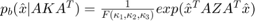
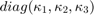
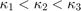

BinghamS2: spherical Bingham distribution function
The Bingham distribution on the sphere is an antipodal symmetric distribution (Bingham, 1974) with a probabiliy density function given by

where A is an orthognal covariance matrix, and Z a concentration matrix with  with  .
In mtex Z is given by Z = [k1,k2,k3] with k3 =0 and A is given by three orthognal vectors.
Bingham, C., An Antipodally Symmetric Distribution on the Sphere, The Annals of Statistics Vol. 2, No. 6 (Nov., 1974), pp. 1201-1225 https://www.jstor.org/stable/2958339
| DocHelp 0.1 beta |